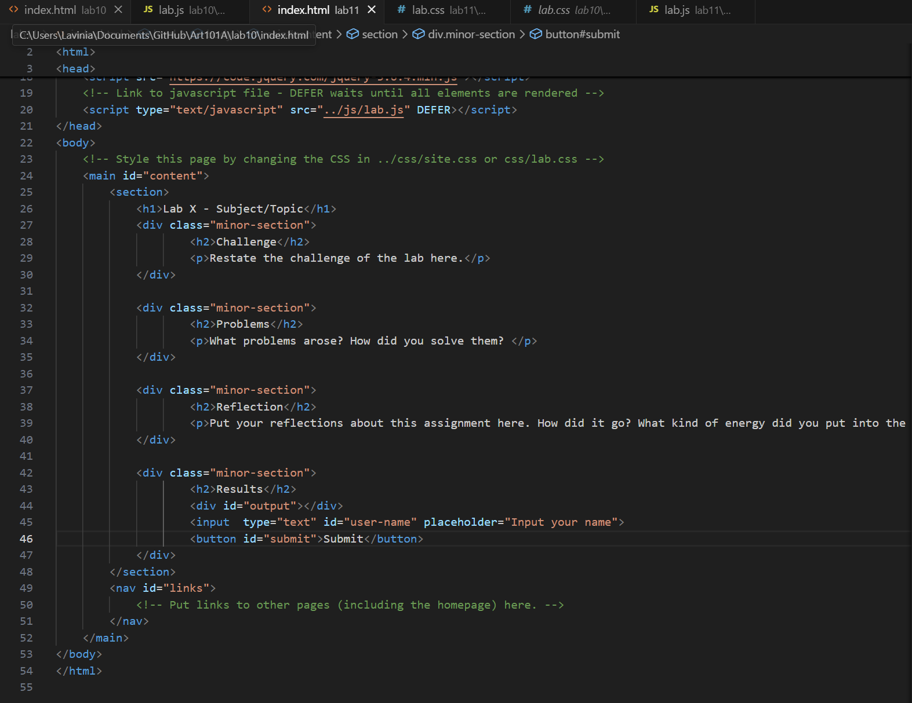
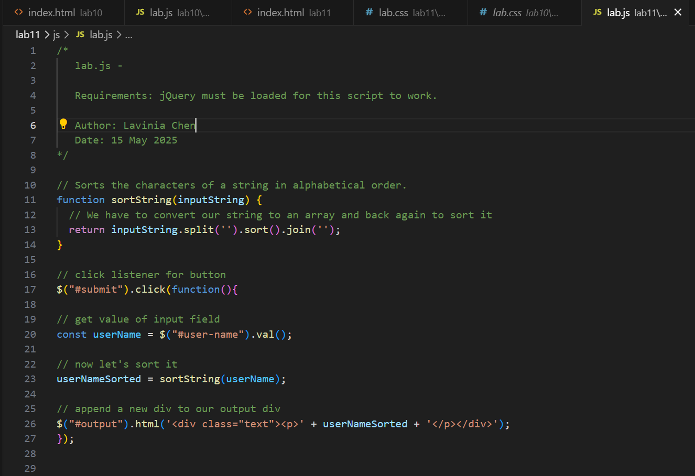
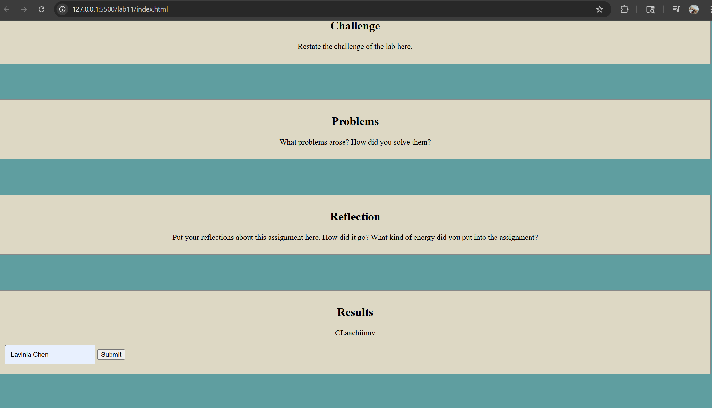

Lab 11 - JavaScript Events and Forms
Challenge
The challenge of the lab was to combine both the input button and also the sorting function that we made previously, and combine those together basically. We needed to input something and then that would need to print the output into the results section sorted.
Problems
I had trouble at first trying to get the output to print in my results section. I realized that I was supposed to be putting all the scripts into js and css files, which I hadn't been doing, so the way to reference them changed. The code I copied from previous labs didn't work, so I messed around with putting "../" and deleting it all over again. I then realized that it wasn't being referenced properly because I had put the html into a seperate file labeled "html" when I wasn't supposed to. After I put it under Lab 11 instead of inside an html folder, all of it started to be referenced correctly.
Reflection
I can feel myself slowly understand more and more about html, with how everything was ebing referenced, and trying to problem solve by looking at every possible way it might not be working. It's really cool seeing my code work.
Results
This is my HTML.
This is my JavaScript.
This is the result of my code after pressing the button.